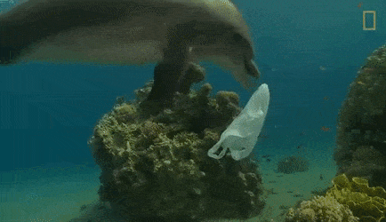

There is so much that we don't know about plastic in the ocean.
The first step to end this problem is understanding what it is.
One of the biggest problems in today's world is the amount of plastic in the ocean. At least 8 million tons of plastic end up in our oceans every year. Floating plastic debris are currently the most abundant items of marine litter. Waste plastic makes up 80% of all marine debris from surface waters to deep-sea sediments. Plastic has been detected on shorelines of all the continents, with more plastic materials found near popular tourist destinations and densely populated areas.
Plastic is a synthetic organic polymer made from petroleum with properties ideally suited for a wide variety of applications, including packaging, building and construction, household and sports equipment, vehicles, electronics and agriculture. Plastic is cheap, lightweight, strong and malleable. Over 300 million tons of plastic are produced every year, half of which is used to design single-use items such as shopping bags, cups and straws. The main sources of marine plastic are land-based, from urban and storm runoff, sewer overflows, beach visitors, inadequate waste disposal and management, industrial activities, construction and illegal dumping. Ocean-based plastic originates mainly from the fishing industry, nautical activities and aquaculture.
Recycling and reuse of plastic materials are the most effective actions available to reduce the environmental impacts of open landfills and open-air burning that are often practiced to manage domestic waste. Sufficient litter and recycling bins can be placed in cities, and on beaches in coastal areas to accelerate the prevention and reduction of plastic pollution. Governments, research institutions and industries also need to work collaboratively redesigning products, and rethink their usage and disposal, in order to reduce microplastics waste from pellets, synthetic textiles and tyres. This will require solutions which go beyond waste management, to consider the whole lifecycle of plastic products, from product design to infrastructure and household use. To effectively address the issue of marine plastics, research and innovation should be supported. Knowledge of the full extent of plastic pollution and its impacts would provide policy-makers, manufacturers and consumers with scientific evidence needed to spearhead appropriate technological, behavioural and policy solutions.